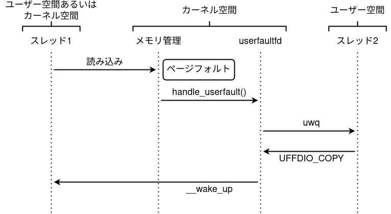
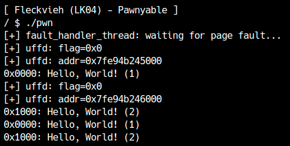
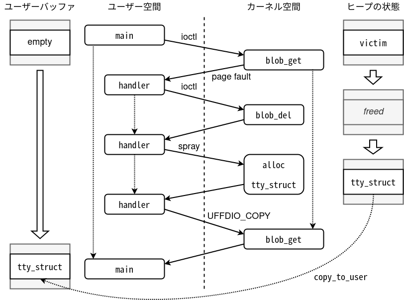
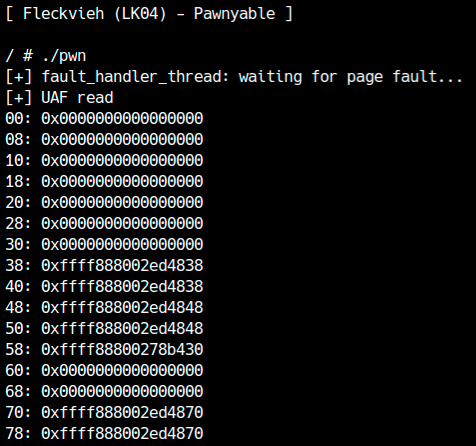
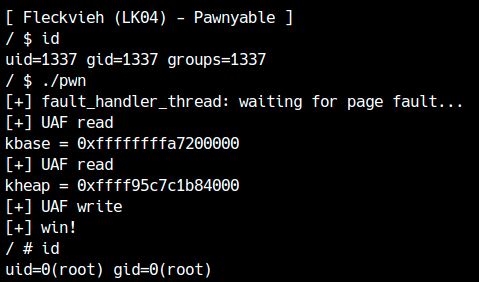

LK04 (Fleckvieh) examines the same race condition as LK01-4 (Holstein v4), but under stricter conditions. First, download the LK04 practice files.
Check the driver
First, read the driver source code. This driver is larger than the previous ones and uses functions and notation that have not appeared before. module_open is shown below:
1 | static int module_open(struct inode *inode, struct file *filp) { |
On line 4, the unlikely macro appears. In the Linux kernel, it is defined as shown here and appears frequently.
1 |
For a conditional branch where one path is taken most of the time, such as a security or memory-shortage check, you can tell the compiler which path is likely. Using the likely and unlikely macros with accurate predictions can improve the speed of frequently executed branches.
If you give a hint to the compiler, it will reduce the number of instructions and branches the more frequently followed the path. This topic also relates to CPU branch prediction, so if you are interested, please look into it.
On line 7, the INIT_LIST_HEAD macro appears. It initializes the list_head structure used for doubly linked lists such as the one in tty_struct. This structure is stored in private_data to create a doubly linked list for each open file.
This list is linked to the blob_list structure.
1 | typedef struct { |
Items are added with list_add, removed with list_del, and iterated with operations such as list_for_each_entry(_safe). Research the specific usage of each operation as needed.
Looking at the ioctl implementation, this module provides four operations: CMD_ADD, CMD_DEL, CMD_GET, and CMD_SET.
1 | static long module_ioctl(struct file *filp, |
CMD_ADD adds a blob_list object to the list. Each object stores up to 0x1000 bytes of arbitrary data. A random ID is assigned when it is added and returned to the user by ioctl. The user can then operate on that blob_list using its ID.
CMD_DEL is handled by passing the ID blob_list can be removed from the list.
CMD_GET specifies the ID, buffer and size, and creates the corresponding blob_list Copy the data to user space.
lastly CMD_SET specifies the ID, buffer and size, and creates the corresponding blob_list Copy data from user space to .
It is a function that allows you to save data like previous modules, but Fleckvieh manages data in a list and can save multiple pieces of data.
Checking for vulnerabilities
If you have studied LK01, the vulnerability is obvious: no operation takes a lock, so data races can occur easily. Exploiting this race is difficult, however.
The data is managed in a complex doubly linked list. A concurrent read or write during deletion can modify the links while the object is being unlinked, corrupting the list and the kernel heap. This can cause crashes during the race or make it impossible to determine whether the use-after-free succeeded.
Let’s implement the race and examine it.
1 | int fd; |
This code repeatedly adds and deletes data from multiple threads. If a race occurs, the list links become corrupted, so the final close crashes while freeing the list contents.
Is it not possible to exploit conflicts in complex data structures like this?
What is userfaultfd?
There is an attack technique that uses a feature called userfaultfd to exploit races with complex conditions like this one and raise the success rate to 100%.
Building Linux with CONFIG_USERFAULTFD enables the userfaultfd feature. userfaultfd handles page faults in user space and is implemented as a system call.
For users without CAP_SYS_PTRACE to use userfaultfd without elevated privileges, the unprivileged_userfaultfd flag must be 1. You can set and inspect it through /proc/sys/vm/unprivileged_userfaultfd. It is 0 by default, but it is 1 on the LK04 machine.
The user obtains a file descriptor with the userfaultfd system call and configures handlers, addresses, and other settings with ioctl. When a page fault occurs on a registered page—typically on its first access—the configured handler is called, allowing user space to choose what data to return. The process works as follows.

When a page fault occurs, the registered user-space handler is called. The thread that attempts to read the page blocks until the handler returns data. The same applies when kernel space reads or writes the page, allowing kernel processing to be paused at the access.
Example of using userfaultfd
Let's try running the following code.
1 |
|
In this code, register_uffd receives the page address and the size to register with userfaultfd. It creates the page-fault handler thread fault_handler_thread.
When a page fault occurs, fault_handler_thread reads the event with read and returns the data. In the sample program, the returned data changes based on the number of page faults.
The main function reserves two pages[1] and registers them with userfaultfd. The first two strcpy calls[2] trigger page faults on first access, so the userfaultfd handler runs. As shown below, the handler is called twice; the test succeeds if its returned data is reflected.

The userfaultfd handler runs on a separate thread, so it may run on a different CPU than the main thread. When allocating an object in the handler, the UAF will fail if the cached heap area is used for each CPU, so be careful to fix the CPU using the sched_setaffinity function.
Race stabilization
Let's actually use userfaultfd for exploitation.
By using userfaultfd, the context can be switched from kernel space (processing in the driver) to user space at the timing of a page fault. A page fault occurs when you first try to read or write a page in the configured user space, so with this driver,copy_from_user or copy_to_user You can pause the process at this point. If you enumerate them, you will see that processing can be stopped at the following locations.
blob_addofcopy_from_userblob_getofcopy_to_userblob_setofcopy_from_user
Because the goal is to trigger a use-after-free, we can pause processing with a handler like the one above and free the object using blob_del. If we delete the object from inside blob_get, we obtain a UAF read; deleting it from inside blob_set gives a UAF write. Let us use a tty_struct to demonstrate both cases.
The overall flow is shown below.

Allocate a tty_struct from the same size class as the victim buffer (kmalloc-1024), then call blob_get. If the destination address is registered with userfaultfd, copy_to_user in blob_get triggers a page fault and invokes the handler. Because the handler runs without the driver's lock, it can call blob_del and free victim.
Next, spray tty_struct objects so that a TTY object is allocated in the freed victim slot. The handler then supplies an appropriate page and returns. When copy_to_user resumes, it copies data from the address of victim, so the TTY object is copied to user space.
The same principle lets blob_set rewrite an object through a UAF. Let us verify this with code.
1 | cpu_set_t pwn_cpu; |
The code is long, but what it does is exactly as shown in the diagram above. We can confirm that Use-after-Free is successful 100% of the time.

As the leak above shows, the beginning of tty_struct cannot be copied. (The original tty_operations pointer and related fields would normally be there, but the first 0x30 bytes are all zero.)
This happens because copy_to_user is called with a large size. It reads from the beginning of victim and copies the data to the destination. The first page fault therefore occurs before the UAF takes place.
Fortunately, the amount copied in each copy_to_user loop iteration depends on the requested size. With a small size such as 0x20, only the first 0x10 bytes are copied before the UAF, while the remaining 0x10 bytes containing the tty_operations pointer are copied after the UAF.
It looks like debugging will be difficult if you don't know when a page fault occurs at the assembly level.
After leaking the KASLR and heap addresses, create a UAF write in the same way.
As usual, overwrite the ops pointer in a fake tty_struct with a fake function table. However, the address used for this UAF may differ from the address leaked previously. The leaked heap address belongs to the tty_struct released by close, so spray tty_operation objects there. (This time, both tty_operation and tty_struct can be used.)
1 | case 2: { |
Once we have a fake function table at the leaked address, we trigger a UAF in the same way as a UAF Read.
1 | // release victim and spray tty_struct |
This time we use a UAF write, so we must control the data that will be written. The source of that data is specified by copy.src, so prepare the replacement tty_struct in advance.
1 | /* [3-1] UAF Write: Rewriting tty_struct */ |
It is a success if RIP is under control. After that, please complete the exploit code up to privilege escalation by yourself.

The sample exploit code can be downloaded here.
I want to cause a page fault on the first access.
MAP_POPULATEis not attached.↩︎directly
printfThen,printfA fault occurs in a function and the handlerputsorprintfBe careful, as a buffering deadlock will occur and the program will stop. In the context of kernel exploitation, you don't need to worry about it since the fault is generated from kernel space.↩︎